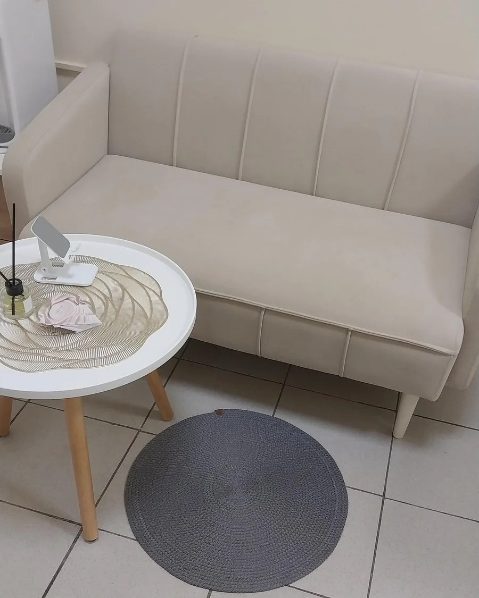

Шугаринг и воск · ЯкутскГладкая кожа надолго
Шугаринг и восковая эпиляция на Дзержинского, 18. Отметьте зоны, и сайт покажет, сколько займёт визит и когда приходить в следующий раз.

План гладкости
Отметьте зоны, остальное посчитаем
Сайт покажет, сколько примерно займёт визит и в какие даты приходить дальше, чтобы кожа оставалась гладкой.
Ваш план
Отметьте хотя бы одну зону.
Время и интервал примерные, мастер уточнит. Стоимость [по вашему прайсу].
Цены
Шугаринг и воск
| Зона | Шугаринг | Воск |
|---|---|---|
| Подмышки | [цена] | [цена] |
| Верхняя губа | [цена] | [цена] |
| Руки полностью | [цена] | [цена] |
| Руки до локтя | [цена] | [цена] |
| Бикини классическое | [цена] | [цена] |
| Бикини глубокое | [цена] | [цена] |
| Голени | [цена] | [цена] |
| Ноги полностью | [цена] | [цена] |
| Живот, линия | [цена] | [цена] |
| Спина | [цена] | [цена] |
Шугаринг
Сахарная паста, подходит для чувствительной кожи и коротких волосков от 3–4 мм.
Воск
Быстро для больших зон, например ног. Волоски нужны от 4–5 мм.
Способы из карточки студии в 2ГИС. Цены по зонам и комплексы [впишем ваш прайс].
Для студии
Как это будет работать у вас
Ничего настраивать не нужно. Сайт работает сам, а вам приходят готовые заявки.
Вас находят
Девушка ищет «шугаринг Якутск» в Яндексе, 2ГИС или спрашивает Алису. Сайт сделан так, чтобы поиск и нейросети понимали, что вы делаете и где находитесь.
Она выбирает
Отмечает зоны, видит, сколько займёт визит, выбирает день и время. Без звонков и переписки «а сколько стоит».
Вам приходит заявка
Новая запись
Анна, шугаринг: подмышки, бикини классическое, суббота 12:00. Телефон и кнопка «Ответить в WhatsApp».
Пример. На готовом сайте придёт настоящая заявка.
Запись
Записаться онлайн
Выберите услугу, день и время, оставьте имя и телефон. Студия работает каждый день с 9:00 до 21:00.
Занятость в календаре придумана для примера.
День
Время
Готово
Откроется бот студии: нажмите «Старт», и накануне придёт напоминание. Студия увидит ваш ник и сможет написать в Telegram. Здесь это демонстрация.
Напоминания включены. Накануне визита придёт сообщение в Telegram.
Как найти
Дзержинского, 18
Якутск, улица Дзержинского, 18
- 1 этаж, правое крыло, офис 1.13
- Каждый день 9:00–21:00
- Наличные или перевод с карты
- +7 967 910-05-99, есть WhatsApp
Вопросы
Коротко о главном
Что выбрать: шугаринг или воск?
Шугаринг мягче для чувствительной кожи и берёт короткие волоски от 3–4 мм. Воск быстрее на больших зонах, например на ногах. Если сомневаетесь, напишите в WhatsApp, мастер подскажет.
Какой длины должны быть волоски?
Для шугаринга примерно 3–4 мм, для воска 4–5 мм. Это 1–2 недели после бритья.
Как часто приходить?
Обычно раз в 3–4 недели. С каждой процедурой волоски становятся тоньше, и интервал можно увеличивать.
Сколько стоит?
Цены по зонам [впишем ваш прайс]. Точную стоимость нескольких зон скажем в WhatsApp.
Когда можно прийти?
Каждый день с 9:00 до 21:00.
Где находитесь и как оплатить?
Якутск, улица Дзержинского, 18, 1 этаж, правое крыло, офис 1.13. Оплата наличными или переводом с карты.